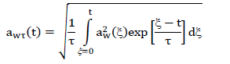
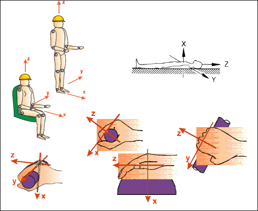
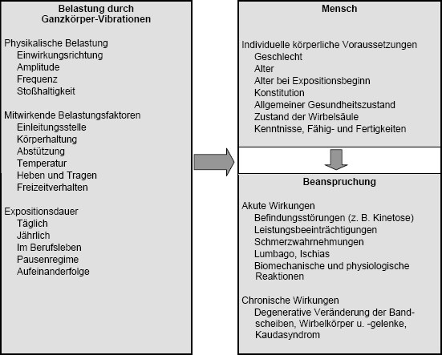
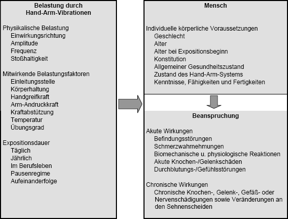

In der TRLV Vibrationen werden folgende Begriffe verwendet:
Hand-Arm-Vibrationen sind mechanische Schwingungen im Frequenzbereich zwischen 8 Hz und 1000 Hz, die bei Übertragung auf das Hand-Arm-System des Menschen Gefährdungen für die Gesundheit und Sicherheit der Beschäftigten verursachen oder verursachen können, insbesondere Knochen- oder Gelenkschäden, Durchblutungsstörungen oder neurologische Erkrankungen. Hand-Arm-Vibrationen treten z. B. auf beim Arbeiten mit handgehaltenen oder handgeführten Arbeitsgeräten mit rotierenden oder oszillierenden Teilen, aber auch durch handgehaltene Werkstücke, durch handgehaltene schwingende Bedienelemente oder bei Geräten mit Einzelauslösung (z. B. Nagler, Bolzensetzer).
Ganzkörper-Vibrationen sind mechanische Schwingungen im Frequenzbereich zwischen 0,1 Hz und 80 Hz, die bei Übertragung auf den gesamten Körper Gefährdungen für die Gesundheit und Sicherheit der Beschäftigten verursachen oder verursachen können, insbesondere Rückenschmerzen und Schädigungen der Wirbelsäule. Ganzkörper-Vibrationen wirken über die Füße beim stehenden, über das Gesäß, die Füße und den Rücken beim sitzenden oder über die Auflagefläche beim liegenden Menschen auf den gesamten Körper beim Kontakt mit vibrierenden Oberflächen ein. Für Gesundheit, Komfort und Wahrnehmung ist der Frequenzbereich von 0,5 Hz bis 80 Hz, für Kinetosen (Bewegungs- oder Seekrankheit) der Frequenzbereich von 0,1 Hz bis 0,5 Hz von Bedeutung. Ganzkörper-Vibrationen treten z. B. auf Fahrzeugen und selbstfahrenden Maschinen und in der Nähe von Maschinen mit großer Unwucht oder Schlagenergie (z. B. Schmiedehämmern) auf.
Die physikalische Messgröße für die Messung und Bewertung von Vibrationen ist die von der Zeit t abhängige Schwingbeschleunigung a(t). Die Frequenzbewertung dient dazu, die auf den Menschen einwirkenden mechanischen Schwingungen entsprechend der frequenzabhängigen Beanspruchung zu gewichten und in ihrer Bandbreite zu begrenzen. Da bei Ganzkörper-Vibrationen die Frequenzbewertung und der jeweils relevante Frequenzbereich von dem Beanspruchungskriterium, von der jeweiligen Einleitungsstelle der Schwingungen und außerdem von der Richtung der Schwingungen abhängen, existieren verschiedene Frequenzbewertungskurven. Für Hand-Arm-Vibrationen wird nur eine Frequenzbewertungskurve verwendet. Sie gilt für die drei Raumrichtungen und ist unabhängig vom Beanspruchungskriterium. Frequenzbewertete Schwingbeschleunigungen werden im Fall von Ganzkörper-Vibrationen durch einen Index w in Form von aw(t) oder im Fall von Hand-Arm-Vibrationen durch einen Index hw in Form von ahw(t) gekennzeichnet.
Der gleitende Effektivwert awt(t) der frequenzbewerteten Schwingbeschleunigung aw(t) ist zeitlich veränderlich und wird nach folgender Gleichung ermittelt:

Darin sind ξ die Integrationsvariable (die Zeit), τ die Integrationszeitkonstante für die gleitende Mittelung und t der Zeitpunkt der Beobachtung.
Bei τ=1s wird üblicherweise anstelle von awt(t) das Symbol awS(t) mit S für "slow" verwendet. Bei τ=0,125s wird anstelle von awt(t) das Symbol awF(t) mit F für "fast" verwendet.
Im Sinne der Prävention von Gesundheitsgefährdungen infolge der Einwirkung von Ganzkörper-Vibrationen wird τ = 0,125s und für Hand-Arm-Vibrationen τ = 1s empfohlen.
Der Maximalwert des gleitenden Effektivwertes max{ahw(t)} ist der maximale gleitende Effektivwert und gleich dem höchsten Wert, den der gleitende Effektivwert während der Messdauer erreicht. Seine besondere Angabe ist daher nur bei der fortlaufenden Beobachtung des gleitenden Effektivwertes sinnvoll, z. B. bei wiederholt auftretenden Stößen oder zur Beobachtung von Änderungen des gleitenden Effektivwertes.
Die Expositionsdauer oder Einwirkungsdauer ist die Dauer, während der ein Kontakt zur vibrierenden Oberfläche besteht und die Schwingungen in den menschlichen Organismus eingeleitet werden.
Jeder Arbeitgeber hat Maßnahmen des Arbeitsschutzes nach dem Stand der Technik zu treffen, damit die Gefährdung der Beschäftigten durch Vibrationen vermieden bzw. so weit wie möglich verringert wird. Dabei hilft die Durchführung eines Vibrationsminderungsprogramms.
Mittelbare (indirekte) Auswirkungen auf die Gesundheit und Sicherheit liegen zum Beispiel vor, wenn durch Vibrationen die Erfassung von Warnsignalen (z. B. von Anzeigeinstrumenten) gestört wird, mobile Maschinen nicht sicher bedient werden können oder wenn Vibrationen die Stabilität der Strukturen oder die Festigkeit von Verbindungen (z. B. von Gebäuden, Maschinen oder Anlagen) beeinträchtigen.
Zur einheitlichen Festlegung der Messrichtungen dient das personenbezogene Koordinatensystem nach Abbildung 1.

Abb. 1 Koordinatensystem für Ganzkörper-Vibrationen und Hand-Arm-Vibrationen
Bei den unmittelbaren (direkten) Auswirkungen ist grundsätzlich zu unterscheiden zwischen akuten und chronischen Wirkungen von Vibrationen.
(1) Bei der Einwirkung von Ganzkörper-Vibrationen können interindividuell große biologische Variationen vorkommen. Ganzkörper-Vibrationen können das allgemeine Wohlbefinden stören, die menschliche Leistungsfähigkeit beeinflussen oder ein Gesundheits- und Sicherheitsrisiko (s. Abbildung 2) darstellen. Niederfrequente Vibrationen mit Frequenzen unter 0,5 Hz können die Funktion des Gleichgewichtsorgans stören und zu Kinetosen (Bewegungskrankheit, Seekrankheit) führen. Weitere akute Wirkungen von Ganzkörper-Vibrationen können schmerzhafte Muskelverspannungen, Verdauungsstörungen, Störungen der peripheren Durchblutung oder Funktionsstörungen der weiblichen Fortpflanzungsorgane sein. Ausgelöst durch Vibrationen kann es zur Änderung physiologischer/biochemischer Parameter (z. B. der Pulsfrequenz, des Blutdrucks oder der Ausschüttung von Hormonen) kommen, die von den Beschäftigten individuell sehr verschieden als Unbehagen bis hin zu Schmerzen wahrgenommen werden und zur Beeinträchtigung der Leistungsfähigkeit führen können.
(2) Infolge langjähriger Einwirkung von Ganzkörper-Vibrationen kann es zu Rückenschmerzen, zu einem verstärkten Verschleiß der Wirbelsäule und in deren Folge auch zu neurologischen Ausfällen in den unteren Gliedmaßen (Kauda-Syndrom) kommen. Außerdem können chronische Störungen der Durchblutung der Füße durch langjährige Vibrationseinleitung über die Füße nicht ausgeschlossen werden.

Abb. 2 Belastungs-Beanspruchungs-Modell für Ganzkörper-Vibrationen
(1) Hand-Arm-Vibrationen können unterschiedliche biologische Wirkungen hervorrufen:
(2) Es ist nicht auszuschließen, dass mehrere unterschiedliche Schädigungsarten bei ein und demselben Menschen gleichzeitig auftreten.
(3) Insbesondere die Zeit- und die Frequenzstruktur der Vibrationen sowie die aufzubringenden statischen Kräfte (Haltekräfte sowie Andruck- und Greifkräfte) haben neben mitwirkenden Umgebungsfaktoren (z. B. Kälte, Lärm) Einfluss auf die Entstehung der Schädigung.
(4) Längere Einwirkungen von Hand-Arm-Vibrationen im Frequenzbereich unterhalb von 30 ... 50 Hz können krankhafte Veränderungen an den Gelenken und Knochen sowie den Sehnenscheiden des Hand-Arm-Schulter-Systems verursachen. Bei höherfrequenten Vibrationsbelastungen treten verstärkt Durchblutungsstörungen der Finger sowie neurologische und motorische Erkrankungen auf.

Abb. 3 Belastungs-Beanspruchungs-Modell für Hand-Arm-Vibrationen
Wechsel- und Kombinationswirkungen können die unmittelbaren oder mittelbaren Auswirkungen auf Gesundheit und Sicherheit verstärken. Das Zusammenwirken mehrerer gleichzeitig einwirkender Belastungen kann die Gefährdung für die Beschäftigten erhöhen.
Beispiele: